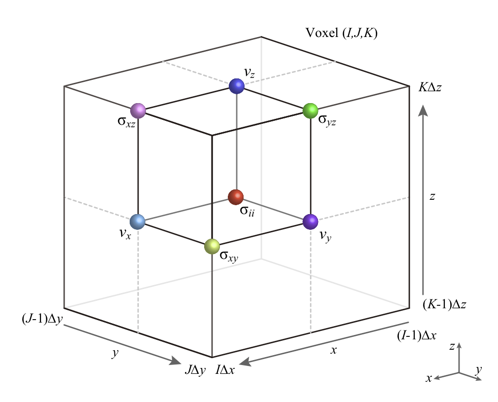

Coordinates and Parallel Computation¶
For parallel computation, OpenSWPC performs 2D model partitioning for
a 3D code (see figure below) and 1D partitioning for a 2D code, in the
horizontal direction in both cases. The computation is performed in
Cartesian coordinates. We adopt the computational coordinate system
depicted in the Figure.
Figure
 (a) Partitioning of the computational domain for MPI. (b) Schematic of the data exchange by the MPI protocol（Modified from Maeda et al., 20131）．
(a) Partitioning of the computational domain for MPI. (b) Schematic of the data exchange by the MPI protocol（Modified from Maeda et al., 20131）．
By default, the coordinate axes , , and represent the north, east, and depth directions, respectively.
They cover the region of xbeg xend, ybeg yend, and zbeg zend. Note that the -axis is defined as positive downward. Because the free surface is usually defined at , it is recommended to let zbeg be a negative value to include the free surface in the model.
The volume is discretized into nx, ny, and nz grids with spatial grid widths of dx, dy, and dz, respectively, in each direction.
The parameter file must provide definitions of xbeg, ybeg, and zbeg and nx, ny, and nz; other parameters (xend, yend, and zend) are automatically computed from them.
The center of the Cartesian coordinate (, ) corresponds to the center longitude (clon) and latitude (clat). The geographical coordinate is projected onto the Cartesian coordinate by the Gauss--Krüger transform
as follows (see Figure below):
-
First generate an evenly spaced grid in Cartesian coordinates from the input parameters phi and those related to the x, y coordinates.
-
Project the grid location onto the geographical coordinate by using the Gauss--Krüger transform with a center location of (
clon,clat). -
Obtain the medium parameter at the grid location via a bicubic interpolation of the input velocity structure model.
If the specified area exceeds that of the input velocity model, the outermost value of the velocity structure is used for the extrapolation.
Figure
 Relation between computational coordinate and geographical coordinate systems.
Relation between computational coordinate and geographical coordinate systems.
Staggered Grid¶
OpenSWPC adopts the staggered-grid coordinate system shown in the following figure.
Figure

Staggered grid layout in 3D space for the case of xbeg=ybeg=zbeg=0
The unit volume shown in the figure is defined as a "voxel" at the grid indices (I,J,K). A grid location
belongs to the voxel number
and if the voxel number I is given, its center coordinate location is
where is a ceiling function and
is the minimum value of the -coordinate. Note that
is set to belong to the voxel I=1.
A voxel has a volume of
The normal stress tensor components are defined at the center of the voxel, the shear stress is defined on the edge, and velocity vector components are defined on its surface.
Medium parameters are defined at the center of the voxel at
If necessary, averaging will be performed between neighboring voxels.
Stability and Wavelength Conditions¶
The spatial grid width, , , and , and the time step width, , must satisfy the stability condition. The stability condition in -dimensional space for the order of the finite difference method is given by
where is the maximum velocity of the medium, are the coefficients of the finite difference formula, and is the spatial grid width in the -th direction. For the fourth-order formula of the finite difference method, which is used in the code, the coefficients are and . For example, for the fourth-order finite difference with isotropic grid sizes () in three-dimensional space, the stability condition is reduced to
This condition can be interpreted as "the distance that the seismic wave propagates within a single time step must be much smaller than the spatial grid width." The numerical simulation will diverge immediately if this condition is not satisfied.
In addition, the minimum wavelength of the simulated seismic waves should be much longer than the spatial grid width. If the wavelength becomes relatively small compared to this condition, a fictitious numerical dispersion will appear and result into inaccurate later phases. Usually, the wavelength is taken to be longer than 5--10 times the spatial grid width to avoid this effect. Therefore, the minimum velocity (usually the S-wave velocity) in the velocity model should be selected carefully. One may specify a smaller spatial grid size to avoid this problem; however, in this case, the time-step size must also be shortened to satisfy the stability condition.
Parameters related to the above conditions will be displayed to the standard error output when the OpenSWPC programs start computation as the Stability Condition c and the Wavelength Condition r. They representes ratios between allowed maximum timestep by the stability condition and the time step parameter dt, and between the minimum wavelength in the medium and grid spacing, respectively. The former must be smaller than 1 to perform computation.
Parameters
nproc_x,nproc_y- Number of partitions in the - and -directions.
The total number of partitions will be
nproc_xnproc_yfor the 3D case andnproc_xfor the 2D case. This total number of partitions must be equal to the number of processes given inmpirun. These numbers can be 1. Ifnproc_x=nproc_y=1, this will become a serial (non-parallel) computation in practice. nx,ny,nz- Total number of spatial grids in each direction.
nxandnydo not need to be multiples ofnproc_xandnproc_y, respectively. dx,dy,dz- Spatial grid width in each direction in units of km. The total computational size in the physical domain will be
nxdx,nydy, andnzdz. The grid widths in different directions do not necessarily need to be equal. nt- Number of time steps.
dt- Length of the time step in seconds. The total physical simulation time will be
ntdt. xbeg,ybeg,zbeg- Minimum value of the coordinates. If specifications of
xbegorybegare omitted, they will automatically be set to xbeg = - nx dx / 2 and ybeg = - ny dy / 2. This setting is recommended to minimize distortion due to the map projection. The default value ofzbegis-30dz. tbeg- Starting time. Usually it is set to zero but can be changed if necessary.
clon,clat- Center longitude and latitude in degrees. The map projection will be performed with this location as a reference point.
phi- Horizontal rotation angle of the computational coordinate (see figure).
If
phi=0, the - and -axes correspond to the north and east directions, respectively. Note that the output files (snapshot and waveform) will be rotated if this value is nonzero.
-
Maeda, T., Furumura, T., Noguchi, S., Takemura, S., Sakai, S., Shinohara, M., Iwai, K., & Lee, S.-J. (2013). Seismic and tsunami wave propagation of the 2011 Off the Pacific Coast of Tohoku Earthquake as inferred from the tsunami-coupled finite difference simulation, Bulletin of the Seismological Society of America, 103, 1456–1472, doi:10.1785/0120120118. (article link) ↩
-
Kawase, K. (2011), A general formula for calculating meridian arc length and its application to coordinate conversion in the Gauss-Krüger projection, Bulletin of the Geospatial Information Authority of Japan, 59, 1–13. (article link) ↩